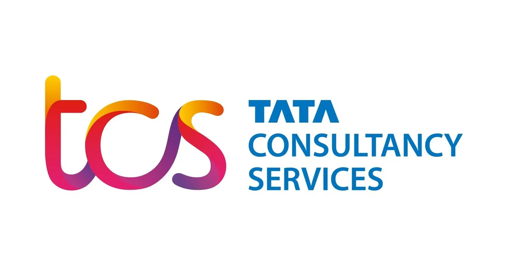

TCS BPS Hiring for 2020, 2021 and 2022 year of passing (YoP) graduates
TCS BPS Hiring for 2020, 2021 and 2022 year of passing (YoP) graduates | Apply Now!
TCS has announced a job notification for BPS Fresher. A student from Any discipline can apply for TCS Recruitment 2021. Interested and eligible candidates can read more details below.

| TCS Recruitment 2022 | |||
|---|---|---|---|
| 1 | Company name | TCS | |
| 2 | Post Name | Off-Campus | |
| 3 | Salary | ₹ 3.5 LPA | |
| 4 | Experience | Freshers | |
| 5 | Job Location | PAN India | |
| 6 | Batch | 2022/21/20/19/18/17 | |
Job Description:
▪︎ TCS BPS Fresher Hiring for the 2022 year of passing (YoP) graduates
Eligibility Criteria:
▪︎ Arts, Commerce & Science graduates from the 2020, 2021 and 2022 year of passing
Application process
▪︎ Logon to the TCS Next Step Portal
▪︎ Step 2. Register and apply for the TCS Off Campus hiring process
▪︎ Scenario A. If you are a registered user, kindly log in and proceed to complete the application form. Upon submission, kindly click on ‘Apply For Drive’.
▪︎ Scenario B. If you are a new user, kindly click on ‘Register Now’, choose the category as ‘IT’ and proceed to fill in your details. Submit your application form and click on “Apply For Drive”.
▪︎ Step 3. Select your mode of the test(In-Centre or Remote) and click on Apply
▪︎ Step 4. To confirm your status, check “Track Your Application“. The status should reflect as “Applied for Drive“
About TCS
TCS Off Campus Hiring is an opportunity for you to chart a career path and realize your potential in working with trending technologies and collaborating with thought leaders across various domains and industries.
How to Apply for TCS Recruitment 2022?
▪︎ Interested and Eligible candidates can apply for this drive online by scrolling down and clicking on Apply HERE.